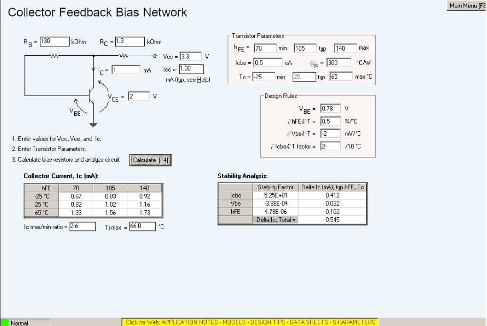
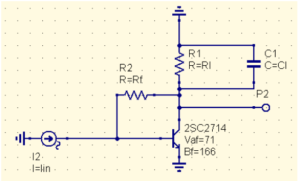
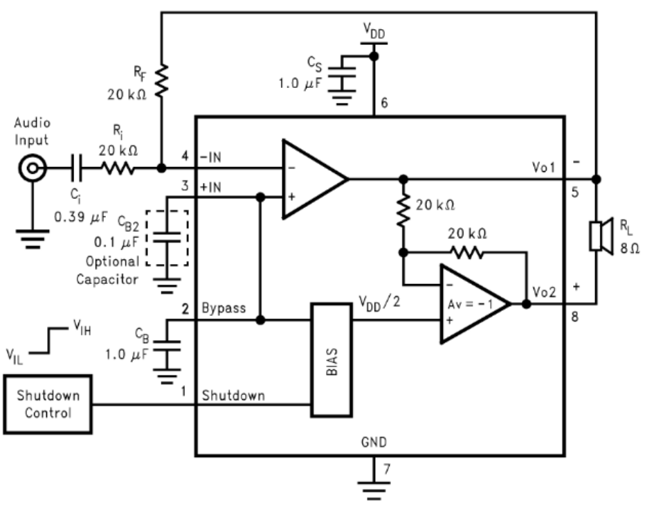
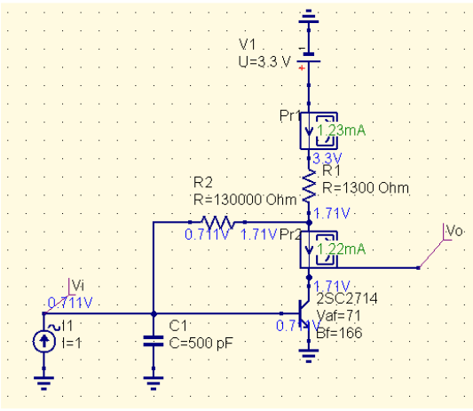
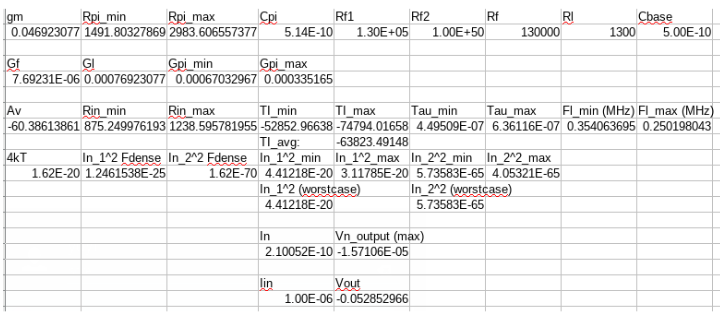
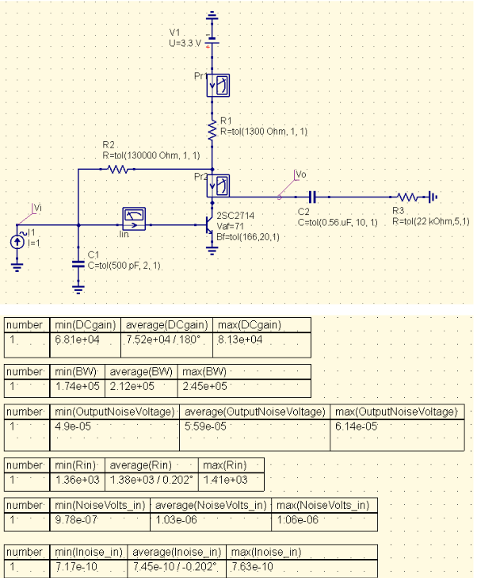
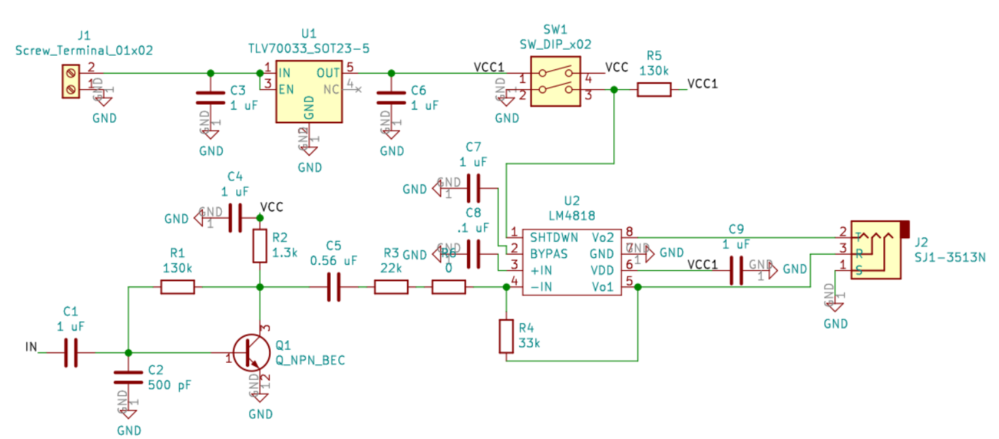
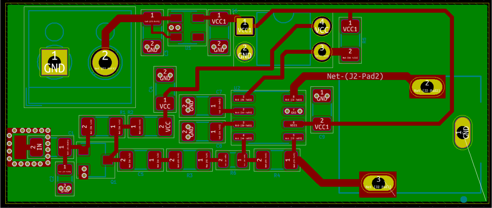

Low Noise Audio-Frequency Transimpedance Amplifier
After the failed testing of the transimpedance amplifier (TIA) designed for the field mill, the design was revised for better noise performance.
Device selection and bias point
A 2SC2714-O NPN transistor was selected as the gain element of the transimpedance stage for its 2.5 dB noise figure (measured at 100 MHz, \(I_e = 1 mA\)). The specifications for this device are tabulated below.
| Max \(V_{ce}\) (V) | \(F_t\) (MHz) | Max \(I_c\) (mA) | hFe Range |
|---|---|---|---|
| 30 | 550 | 20 | 70-140 |
The SPICE model is:
.MODEL 2SC2714 NPN( IS=1.45E-15 BF=166 NF=1.00 VAF=71 IKF=49E-3 ISE=43E-15 NE=2.45
BR=5.33 NR=997E-3 VAR=22 IKR=69E-3 ISC=847E-18 NC=1.02 RB=14 IRB=1.00E-6 RBM=14
RE=46E-3 RC=9.17 XTB=0.00 EG=1.11 eV XTI=3.00 CJE=1.66E-12 VJE=717E-3 MJE=331E-3
TF=153E-12 XTF=100 VTF=383E-3 ITF=90E-3 PTF=47 CJC=781E-15 VJC=630E-3 MJC=462E-3
XCJC=1.00 TR=1.00E-6 FC=900E-3)A \(V_{cc}=3.3 V\) is chosen for compatibility with 1.5V and 3.6V batteries. This will be supplied by a LDO (TLV70033). Since the BJT is only specified for 1 mA in the datasheet, a bias point of \(V_{ce}=2 V, I_c=1 mA\) is chosen for an \(\approx 2 V_{pp}\) output swing and a low noise figure. AppCad was used to calculate the collector-feedback bias circuit needed to achieve this DC bias point.
AppCad window for bias point design |
|---|
 |
Small signal analysis of TIA stage
The tabulated hybrid-\(\pi\) model for the chosen BJT is listed below.
| \(g_m\) (\(\text{mOhms}^{-1}\)) | \(C_{\pi}\) (pF) | \(R_{\pi}\) Range (Ohms) |
|---|---|---|
| 38.4 | 11 | 1822-3645 |
Supposing the transistor is placed in a shunt-feedback topology, the resultant schematic can be drawn out as below.
TIA stage schematic for small-signal analysis |
|---|
 |
For this circuit, the following parameters can be calculated at the outset. Here, \(A_v\) represents the voltage gain of the circuit and \(G\) variables represent conductance.
| DC voltage gain | Input resistance | DC transimpedance gain |
|---|---|---|
| \(\frac{V_o}{V_i}=\frac{G_f-g_m}{G_f+G_l}\) | \(R_{in}=\frac{R_{\pi}}{1+R_{\pi}G_f(1-A_v)}\) | \(\frac{V_o}{I_{in}}=\frac{A_vR_{\pi}}{1+R_{\pi}G_f(1-A_v)}\) |
For a large \(A_v\), the DC transimpedance gain reduces to \(R_f\). The following time constant analysis gives the dominant pole time constant.
| Circuit time constant from \(C_\pi\) | Circuit time constant from \(C_l\) |
|---|---|
| \(\tau_1=\frac{C_{\pi}}{g_m+g_\pi+G_lA_v}\) | \(\tau_2=\frac{C_l}{G_l+(1+\beta)(\frac{1}{R_f+R_\pi})}\) |
The dominant pole then has a time constant of \(\tau=\tau_1+\tau_2\).
For noise analysis, the input noise current is simply \(i_n^2=4kTF_{3dB}/R_f\) where \(4kT=1.62e-20\) at 20 C.
Audio amplifier stage design
An audio amplifier stage is required to convert the TIA output into an audio line level signal. For this purpose, the LM4818 IC was chosen. The specs for this chip are tabulated below.
| Input Voltage Range | Load Impedance | 1% THD Output Power (\(V_{dd}=3.3V\)) |
|---|---|---|
| \(-0.3 V \to \text{VDD}+0.3V\) | 16 Ohms | 120 mW |
To ensure that the low-noise TIA stage’s noise figure is dominant, the audio amp stage needs a moderate gain and a large input resistance relative to the TIA BJT’s collector resistance. The passband should also omit 60 Hz (the power line frequency). Therefore, a gain of \(3 V/V\), \(R_{in}=22 k\Omega\), and bandwidth of \(70 Hz\to 20 kHz\) are chosen.
The typical application circuit for the LM4818 is shown below.
Example design for LM4818 |
|---|
 |
\(R_i\) is set to the desired input resistance of \(22 k\Omega\). \(R_f\) can be calculated with \(A_v=2\frac{R_f}{R_i}\), resulting in \(R_f=33 k\Omega\). To select the desired high pass frequency, the 3dB frequency of the high-pass element formed by \(R_i\) and \(C_i\) is set to \(0.2\times 70 Hz\). Therefore, \(C_i > 0.517 uF\). The resultant component values for this stage are then:
| \(R_i\) | \(R_f\) | \(f_l\) | \(f_h\) | \(C_i\) | GBWP spec | \(C_B\) | \(C_{B2}\) | \(C_s\) |
|---|---|---|---|---|---|---|---|---|
| 22 kOhm | 33 kOhm | 14 Hz | 20 kHz | 0.56 uF | 300 kHz | 1 uF | 0.1 uF | 1 uF |
TIA Component Value Calculations
The DC bias sim in QucsStudio was used to verify the calculated component values.
Simulated DC operating point |
|---|
 |
The below Libreoffice spreadsheet was used to conduct the small-signal analysis.
Small signal spreadsheet calculations |
|---|
 |
A Monte Carlo sim with 1000 runs was conducted as verification of the design.
Verification with Monte Carlo sim |
|---|
 |
Kicad PCB Layout
Kicad schematic |
|---|
 |
Kicad board layout |
|---|
 |